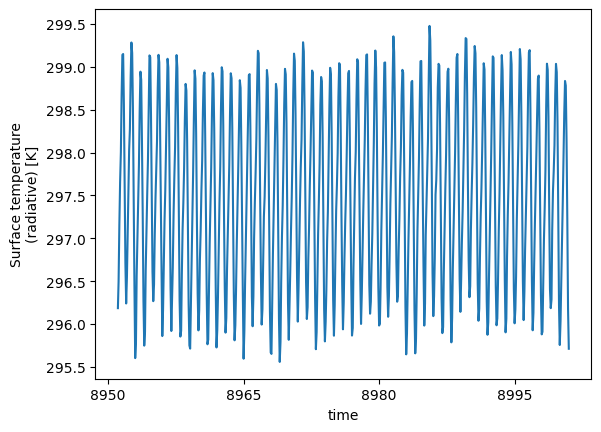
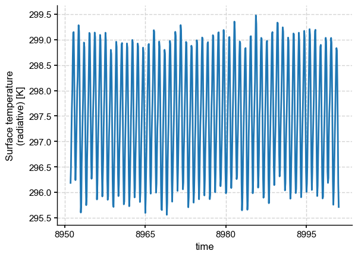
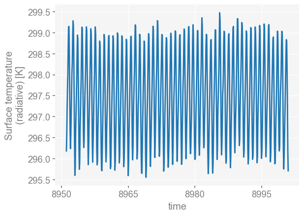
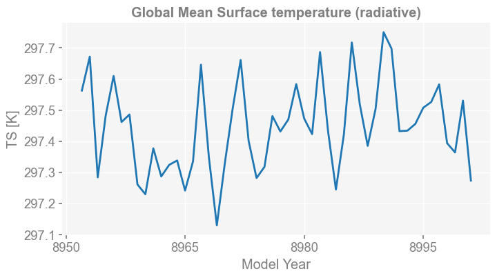
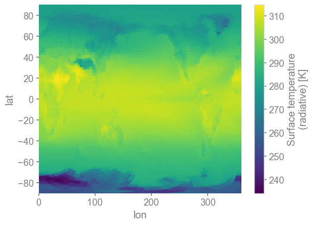
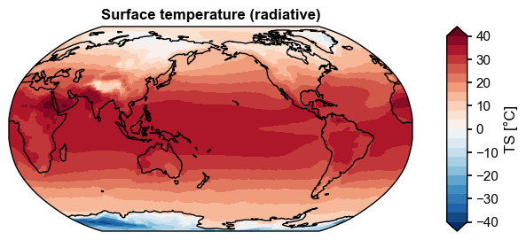
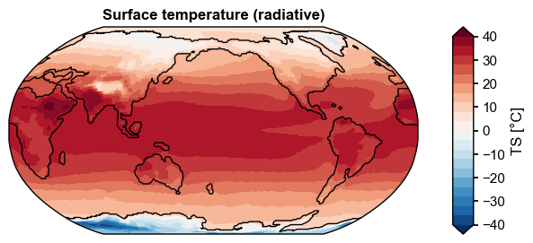
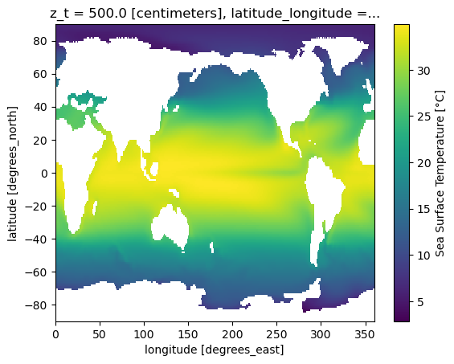
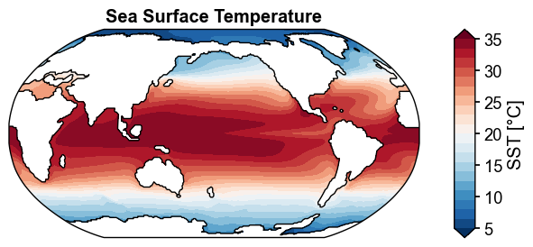
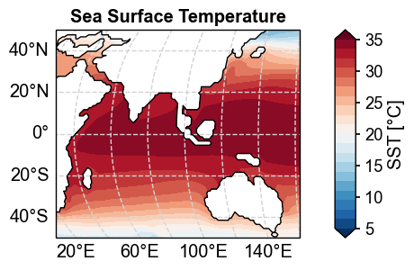

Basic visualizations#
Note that this functionality only works on xarray.DataArray.
[1]:
%load_ext autoreload
%autoreload 2
import os
import numpy as np
os.chdir('/glade/u/home/fengzhu/Github/x4c/docsrc/notebooks')
import x4c
print(x4c.__version__)
2025.6.22
Load data#
Note that CESM1 output has a month shift in its original output, and adjust_month=True helps fix this shift.
[3]:
dirpath = '/glade/campaign/univ/ubrn0018/fengzhu/CESM_output/timeseries/b.e13.B1850C5.ne16_g16.icesm131_d18O_fixer.Miocene.3xCO2.005/atm/proc/tseries/month_1'
fname = 'b.e13.B1850C5.ne16_g16.icesm131_d18O_fixer.Miocene.3xCO2.005.cam.h0.TS.895101-900012.nc'
ds = x4c.open_dataset(os.path.join(dirpath, fname), comp='atm', grid='ne16np4', adjust_month=True)
ds
[3]:
<xarray.Dataset> Size: 34MB
Dimensions: (lev: 30, ilev: 31, ncol: 13826, time: 600, nbnd: 2)
Coordinates:
* lev (lev) float64 240B 3.643 7.595 14.36 ... 957.5 976.3 992.6
* ilev (ilev) float64 248B 2.255 5.032 10.16 ... 967.5 985.1 1e+03
* time (time) object 5kB 8951-01-31 00:00:00 ... 9000-12-31 00:00:00
Dimensions without coordinates: ncol, nbnd
Data variables: (12/31)
hyam (lev) float64 240B ...
hybm (lev) float64 240B ...
P0 float64 8B ...
hyai (ilev) float64 248B ...
hybi (ilev) float64 248B ...
lat (ncol) float64 111kB ...
... ...
n2ovmr (time) float64 5kB ...
f11vmr (time) float64 5kB ...
f12vmr (time) float64 5kB ...
sol_tsi (time) float64 5kB ...
nsteph (time) int32 2kB ...
TS (time, ncol) float32 33MB ...
Attributes: (12/18)
np: 4
ne: 16
Conventions: CF-1.0
source: CAM
case: b.e13.B1850C5.ne16_g16.icesm131_d18O_fixer.Miocene.3xCO...
title: UNSET
... ...
path: /glade/campaign/univ/ubrn0018/fengzhu/CESM_output/times...
comp: atm
grid: ne16np4
gw: <xarray.DataArray 'area' (ncol: 13826)> Size: 111kB\n[1...
lat: <xarray.DataArray 'lat' (ncol: 13826)> Size: 111kB\n[13...
lon: <xarray.DataArray 'lon' (ncol: 13826)> Size: 111kB\n[13...The original xarray.plot() is very barebone.
[4]:
da = ds['TS'].mean('ncol') # a simple average for illustration purposes
da.plot()
[4]:
[<matplotlib.lines.Line2D at 0x154cbf9e25d0>]

Setting styles#
We may set one of a supported styles:
“journal”: suitable for journal papers
“web”: suitable for posters
with suffix such as:
“_spines”: to add full spines
“_nospines”: to remove the spines
“_grid”: to add grid lines
“_nogrid”: to remove grid lines
with a font_scale to adjust the general fontsize of the plots.
[5]:
x4c.set_style(style='journal', font_scale=1.0)
da.plot()
[5]:
[<matplotlib.lines.Line2D at 0x154cbf233ed0>]

[6]:
x4c.set_style(style='web', font_scale=1.2)
da.plot()
[6]:
[<matplotlib.lines.Line2D at 0x154cbf09d950>]

Need for Metadata#
The barebone xarray plots shows no units information for the x/y-labels. With x4c, this can be automatically done!
Note below the extra xarray.Dataarray metadata inherited from xarray.Dataset.
[7]:
da = ds.x['TS'].x.gm.x.annualize()
da
[7]:
<xarray.DataArray 'TS' (time: 50)> Size: 400B
array([297.56282279, 297.67198356, 297.28381443, 297.48223745,
297.60989259, 297.46179848, 297.48585448, 297.26103259,
297.22947874, 297.37707548, 297.28672459, 297.32389898,
297.33800121, 297.24141335, 297.33525339, 297.64601646,
297.3477676 , 297.12936375, 297.32801696, 297.50567636,
297.66118023, 297.4015844 , 297.28154627, 297.31759219,
297.48082027, 297.4313103 , 297.46966295, 297.58352789,
297.47293573, 297.42282492, 297.68653733, 297.43372963,
297.24456808, 297.42188707, 297.71741499, 297.5193649 ,
297.38501398, 297.504962 , 297.75040988, 297.69777373,
297.43243321, 297.4338748 , 297.45569831, 297.50777847,
297.52611438, 297.58263552, 297.39371948, 297.36401344,
297.53050595, 297.27341151])
Coordinates:
* time (time) object 400B 8951-12-31 00:00:00 ... 9000-12-31 00:00:00
Attributes:
units: K
long_name: Global Mean Surface temperature (radiative)
cell_methods: time: mean
path: /glade/campaign/univ/ubrn0018/fengzhu/CESM_output/timeseri...
gw: <xarray.DataArray 'area' (ncol: 13826)> Size: 111kB\narray...
lat: <xarray.DataArray 'lat' (ncol: 13826)> Size: 111kB\n[13826...
lon: <xarray.DataArray 'lon' (ncol: 13826)> Size: 111kB\n[13826...
comp: atm
grid: ne16np4Note below that the returns of x.plot() method becomes fig, ax, which means that we can modify ax and save the fig.
[10]:
fig, ax = da.x.plot(figsize=(8, 4))
x4c.showfig(fig)
x4c.savefig(fig, './figs/GMST.pdf')

Figure saved at: "figs/GMST.pdf"
Plotting maps#
The original plot from xarray is also barebone.
[11]:
da = ds.x.regrid().x['TS'].x.annualize()
da_clim = da.mean('time')
da_clim.plot()
[11]:
<matplotlib.collections.QuadMesh at 0x154cbf2c4980>

[12]:
import numpy as np
x4c.set_style('journal', font_scale=1)
da_clim = da.mean('time') - 273.15
da_clim.attrs['units'] = '°C'
fig, ax = da_clim.x.plot(
levels=np.linspace(-40, 40, 21),
cbar_kwargs={'ticks': np.linspace(-40, 40, 9)},
)

Add coastlines based on ocean data#
[14]:
dirpath = '/glade/campaign/univ/ubrn0018/fengzhu/CESM_output/timeseries/b.e13.B1850C5.ne16_g16.icesm131_d18O_fixer.Miocene.3xCO2.005/ocn/proc/tseries/month_1'
fname = 'b.e13.B1850C5.ne16_g16.icesm131_d18O_fixer.Miocene.3xCO2.005.offset.d18O.branch.pop.h.SSH.895101-900012.nc'
ds = x4c.load_dataset(os.path.join(dirpath, fname), comp='ocn', grid='g16', adjust_month=True)
ds['SSH']
[14]:
<xarray.DataArray 'SSH' (time: 600, nlat: 384, nlon: 320)> Size: 295MB
array([[[nan, nan, nan, ..., nan, nan, nan],
[nan, nan, nan, ..., nan, nan, nan],
[nan, nan, nan, ..., nan, nan, nan],
...,
[nan, nan, nan, ..., nan, nan, nan],
[nan, nan, nan, ..., nan, nan, nan],
[nan, nan, nan, ..., nan, nan, nan]],
[[nan, nan, nan, ..., nan, nan, nan],
[nan, nan, nan, ..., nan, nan, nan],
[nan, nan, nan, ..., nan, nan, nan],
...,
[nan, nan, nan, ..., nan, nan, nan],
[nan, nan, nan, ..., nan, nan, nan],
[nan, nan, nan, ..., nan, nan, nan]],
[[nan, nan, nan, ..., nan, nan, nan],
[nan, nan, nan, ..., nan, nan, nan],
[nan, nan, nan, ..., nan, nan, nan],
...,
...
[nan, nan, nan, ..., nan, nan, nan],
[nan, nan, nan, ..., nan, nan, nan],
[nan, nan, nan, ..., nan, nan, nan]],
[[nan, nan, nan, ..., nan, nan, nan],
[nan, nan, nan, ..., nan, nan, nan],
[nan, nan, nan, ..., nan, nan, nan],
...,
[nan, nan, nan, ..., nan, nan, nan],
[nan, nan, nan, ..., nan, nan, nan],
[nan, nan, nan, ..., nan, nan, nan]],
[[nan, nan, nan, ..., nan, nan, nan],
[nan, nan, nan, ..., nan, nan, nan],
[nan, nan, nan, ..., nan, nan, nan],
...,
[nan, nan, nan, ..., nan, nan, nan],
[nan, nan, nan, ..., nan, nan, nan],
[nan, nan, nan, ..., nan, nan, nan]]],
shape=(600, 384, 320), dtype=float32)
Coordinates:
ULONG (nlat, nlon) float64 983kB 343.5 344.8 346.1 ... 326.4 326.7 327.0
ULAT (nlat, nlon) float64 983kB -87.53 -87.52 -87.5 ... 72.64 72.64
TLONG (nlat, nlon) float64 983kB 341.6 342.9 344.2 ... 326.2 326.5 326.8
TLAT (nlat, nlon) float64 983kB -87.73 -87.72 -87.7 ... 72.52 72.52
* time (time) object 5kB 8951-01-31 00:00:00 ... 9000-12-31 00:00:00
Dimensions without coordinates: nlat, nlon
Attributes:
long_name: Sea Surface Height
units: centimeter
grid_loc: 2110
cell_methods: time: mean[15]:
ssh = ds.x.regrid()['SSH']
ssh
[15]:
<xarray.DataArray 'SSH' (time: 600, lat: 180, lon: 360)> Size: 156MB
array([[[ nan, nan, nan, ..., nan, nan,
nan],
[ nan, nan, nan, ..., nan, nan,
nan],
[ nan, nan, nan, ..., nan, nan,
nan],
...,
[48.414616, 48.703632, 49.02669 , ..., 47.757298, 47.938923,
48.159714],
[50.7867 , 50.897106, 50.99664 , ..., 50.391834, 50.533882,
50.66557 ],
[52.920757, 52.97364 , 53.02541 , ..., 52.832 , 52.836235,
52.87528 ]],
[[ nan, nan, nan, ..., nan, nan,
nan],
[ nan, nan, nan, ..., nan, nan,
nan],
[ nan, nan, nan, ..., nan, nan,
nan],
...
[58.580364, 58.84468 , 59.15703 , ..., 58.073162, 58.195946,
58.36414 ],
[58.43994 , 58.551495, 58.64609 , ..., 58.005577, 58.16674 ,
58.311615],
[56.912468, 56.98436 , 57.054127, ..., 56.783184, 56.79517 ,
56.84986 ]],
[[ nan, nan, nan, ..., nan, nan,
nan],
[ nan, nan, nan, ..., nan, nan,
nan],
[ nan, nan, nan, ..., nan, nan,
nan],
...,
[54.045357, 54.231472, 54.45639 , ..., 53.717175, 53.789608,
53.898087],
[54.589626, 54.661804, 54.721123, ..., 54.29745 , 54.40727 ,
54.504726],
[52.933044, 53.00493 , 53.074856, ..., 52.81747 , 52.831196,
52.87649 ]]], shape=(600, 180, 360), dtype=float32)
Coordinates:
* time (time) object 5kB 8951-01-31 00:00:00 ... 9000-12-31 00:00:00
* lon (lon) float64 3kB 0.5 1.5 2.5 3.5 4.5 ... 356.5 357.5 358.5 359.5
* lat (lat) float64 1kB -89.5 -88.5 -87.5 -86.5 ... 86.5 87.5 88.5 89.5
Attributes:
long_name: Sea Surface Height
units: centimeter
grid_loc: 2110
cell_methods: time: mean[16]:
fig, ax = da_clim.x.plot(
levels=np.linspace(-40, 40, 21),
cbar_kwargs={'ticks': np.linspace(-40, 40, 9)},
ssv=ssh.mean('time'),
)

OCN#
[2]:
dirpath = '/glade/campaign/univ/ubrn0018/fengzhu/CESM_output/timeseries/b.e13.B1850C5.ne16_g16.icesm131_d18O_fixer.Miocene.3xCO2.005/ocn/proc/tseries/month_1'
fname = 'b.e13.B1850C5.ne16_g16.icesm131_d18O_fixer.Miocene.3xCO2.005.pop.h.TEMP.695101-700012.nc'
ds = x4c.open_dataset(os.path.join(dirpath, fname), comp='ocn', grid='g16', adjust_month=True)
[6]:
da_ann = ds.x['TEMP'].isel(z_t=0).x.annualize()
[7]:
sst = da_ann.x.regrid()
[8]:
sst_clim = sst.mean('time')
sst_clim.attrs['units'] = '°C'
sst_clim.attrs['long_name'] = 'Sea Surface Temperature'
sst_clim.name = 'SST'
sst_clim
[8]:
<xarray.DataArray 'SST' (lat: 180, lon: 360)> Size: 259kB
array([[ nan, nan, nan, ..., nan, nan,
nan],
[ nan, nan, nan, ..., nan, nan,
nan],
[ nan, nan, nan, ..., nan, nan,
nan],
...,
[6.079927 , 6.0755725, 6.071318 , ..., 6.093467 , 6.0889406,
6.0843835],
[6.1800756, 6.178551 , 6.17708 , ..., 6.184958 , 6.1832805,
6.181652 ],
[6.2866673, 6.286374 , 6.2860956, ..., 6.2877827, 6.287389 ,
6.287011 ]], dtype=float32)
Coordinates:
* lat (lat) float64 1kB -89.5 -88.5 -87.5 ... 87.5 88.5 89.5
* lon (lon) float64 3kB 0.5 1.5 2.5 3.5 ... 357.5 358.5 359.5
z_t float32 4B 500.0
latitude_longitude float64 8B nan
Attributes:
long_name: Sea Surface Temperature
units: °C
grid_loc: 3111
cell_methods: time: mean
path: /glade/campaign/univ/ubrn0018/fengzhu/CESM_output/timeseri...
gw: <xarray.DataArray 'gw' (lat: 180, lon: 360)> Size: 518kB\n...
lat: <xarray.DataArray 'lat' (lat: 180)> Size: 1kB\narray([-89....
lon: <xarray.DataArray 'lon' (lon: 360)> Size: 3kB\narray([ 0....
comp: ocn
grid: g16[9]:
sst_clim.plot()
[9]:
<matplotlib.collections.QuadMesh at 0x150fdd206a50>

[15]:
x4c.set_style('journal_spines', font_scale=1.2)
fig, ax = sst_clim.x.plot(
levels=np.linspace(5, 35, 21),
cbar_kwargs={'ticks': np.linspace(5, 35, 7)},
)

[25]:
x4c.set_style('journal_spines', font_scale=1.2)
fig, ax = sst_clim.x.plot(
levels=np.linspace(5, 35, 21),
cbar_kwargs={'ticks': np.linspace(5, 35, 7)},
add_gridlines=True,
latlon_range=[-50, 50, 30, 160],
)

[WARNING] yaksa: 10 leaked handle pool objects
[ ]: